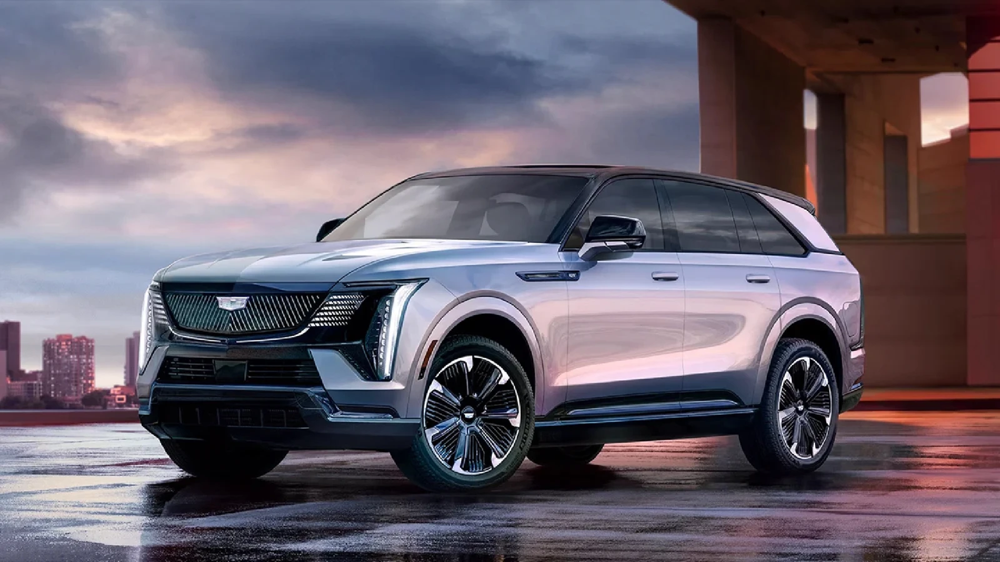
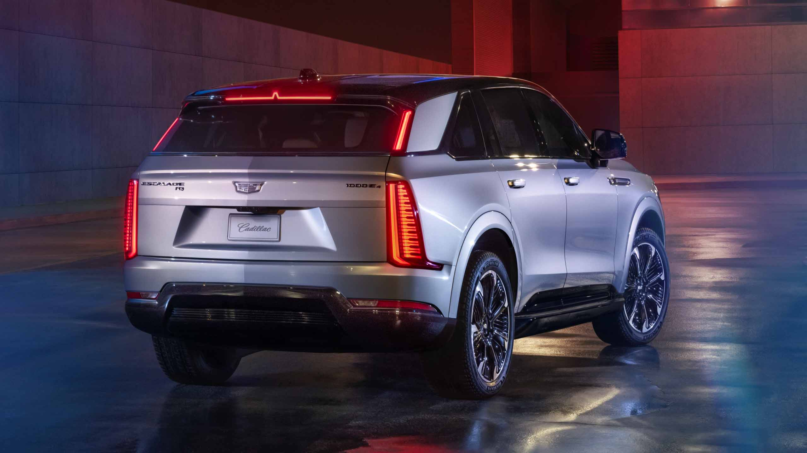
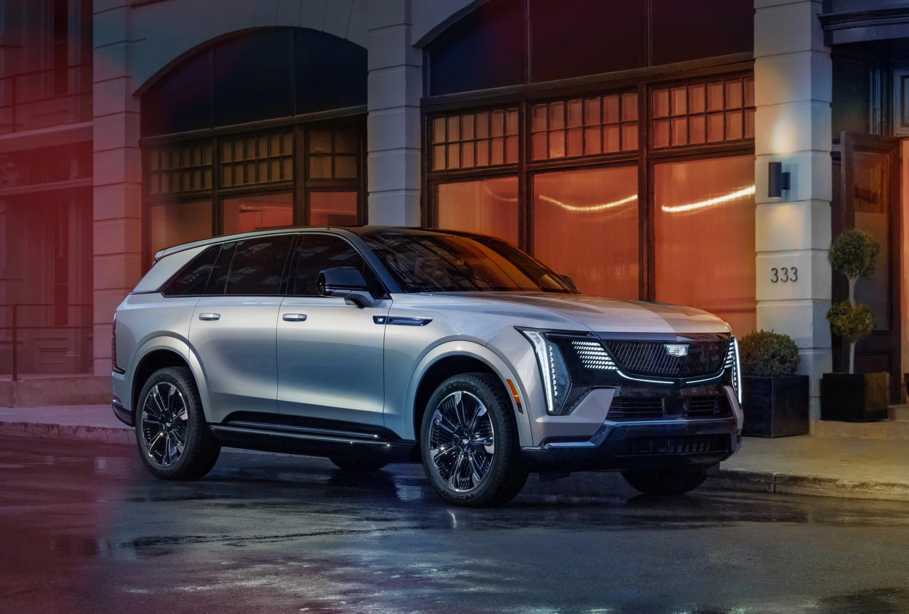
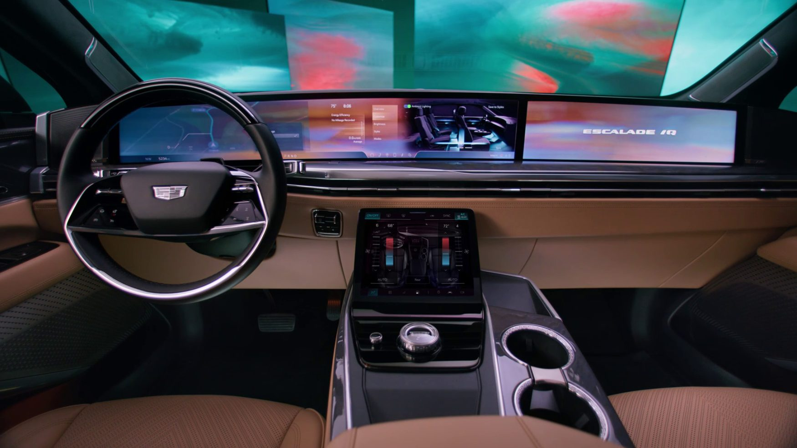
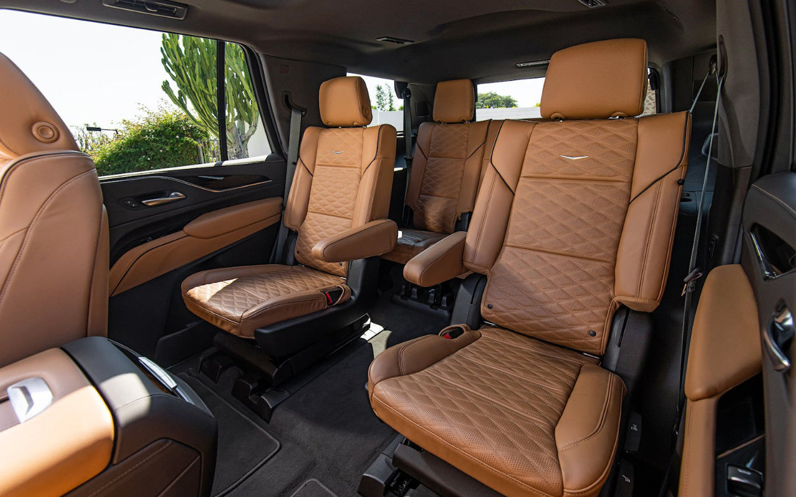
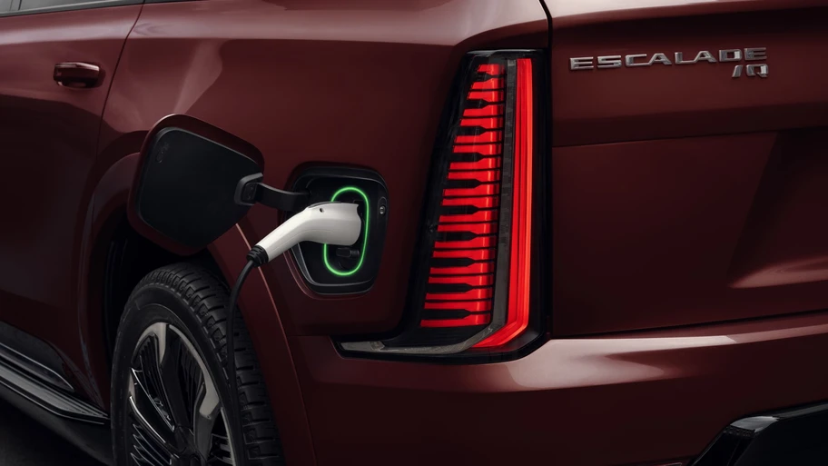

Cadillac Escalade IQ 2026 llega a México, estos son los precios y versiones de esta SUV grande

Hace casi dos años que General Motors presentó la Cadillac Escalade IQ, la versión 100% eléctrica de su SUV full size, misma que arribará al mercado mexicano en septiembre de este año, para reforzar la estrategia EV de GM en nuestro país.
La Escalade IQ es una muestra de hasta dónde pude llegar la ingeniería de la compañía, pues estamos hablando no sólo de un vehículo de 5.6 metros de largo, con más de 700 caballos de fuerza, sino de camioneta que simplemente contiene lo más avanzado de las tecnologías de GM, en el paquete más refinado posible.
Esto lo podemos ver desde su apuesta estética, donde no deja de lado los rasgos de diseño que la han caracterizado siempre, sobre todo con espectaculares juegos de luces en los faros y las calaveras, pero ahora lleva esa imagen a esta nueva era de la marca, con una parrilla en negro piano, con acabado en Cromado Obsidiana y detalles de LED, y las calaveras partidas en dos unidades como en el resto de la gama de modelos eléctricos de Cadillac.
Uno de los detalles que llama la atención, y ayuda a que este vehículo tenga una postura más deportiva, es que esta Escalade IQ cuenta con una distancia más larga entre el tablero y el eje, lo que genera la apariencia de que el habitáculo está echado un poco más hacia atrás, como en un Gran Turismo. Esta presencia se acompaña con un juego de rines de aluminio Black Gloss de 24 pulgadas.

Cadillac Escalade IQ: Tren motriz
Este modelo toma como base la plataforma Ultium de GM, incorporando dos motores ubicados uno en cada eje,
que son alimentados por una batería de 24 módulos con más de 200 kWh de energía disponible,
para entregar hasta 750 Hp y 785 Lb-pie de torque, lo que permite una aceleración de 0 a 100 km/h en menos de 5 segundos.
Gracias a su suspensión independiente en el eje delantero y trasero,
con un motor eléctrico que trabaja en conjunto como un sistema eAWD avanzado,
la marca promete un desempeño excepcional.
Asimismo, este vehículo alcanza una autonomía estimada por Cadillac de 740 Km con una carga completa,
la mayor autonomía ofrecida en el segmento.
Cadillac Escalade IQ incorpora tecnologías como Magnetic Ride Control 4.0 y Adaptive Air Ride Suspension,
que aíslan a los pasajeros de superficies irregulares mientras mejoran la dirección y la sensación al volante.
Además, cuenta con las funciones Regen on Demand y One-Pedal Driving,
que permiten recuperar energía durante la desaceleración y optimizar la autonomía,
al transformar la energía cinética en electricidad almacenada en la batería

Cadillac Escalade IQ: Diseño interior
Puertas adentro, esta SUV grande destaca:
- Pantalla de 55” de cristal curvo de pilar a pilar
- Sistema de audio estándar AKG Studio con 42 bocinas y amplificador envolvente
- Cámara de visión nocturna con imágenes térmicas
- Techo de cristal que se extiende por toda la superficie de la primera y segunda fila de asientos
- Iluminación ambiental que incluye hasta 126 colores disponibles para dos zonas diferentes de la cabina.

- Asientos eléctricos con función de calefacción, ventilación, masaje y múltiples posiciones
- Consola central en la segunda fila
- Mesas plegables
- Dos cargadores inalámbricos para smartphone
- Dos pantallas traseras de 12
- Puerta motorizada para el puerto de carga que se activa con un toque
- Una pantalla táctil de mando independiente para controlar las funciones de asientos, apertura y cierre de puertas y control de clima

Asimismo, cuenta con un sistema de apertura y cierre eléctrico para las puertas exteriores, permitiendo que las cuatro se abran y cierren al presionar un botón por lo que si está activado, la puerta del conductor se abrirá automáticamente cuando se acerque con la llave inteligente.
Bajo el cofre, se ubica el que ofrece 12.2 litros de almacenamiento, brindando una capacidad de carga total de más de 1,000 litros.
Cadillac Escalade IQ: Seguridad
Esta SUV grande incorpora tecnologías avanzadas de asistencia para mejorar la seguridad, como:
- Visión nocturna
- Reconocimiento de señales de tráfico
- 7 bolsas de aire
- Asistente de tráfico cruzado
- Asistencia de estacionamiento frontal, trasera y lateral
- Asistente de colisión inminente a cualquier velocidad

Además, la Escalade IQ está equipada con toda la tecnología, seguridad y conectividad de OnStar que incluye 36 meses del paquete Essentials, así como 36 meses de datos ilimitados para poder conectar a internet sus dispositivos móviles a través de su hotspot de Wi-Fi.
Cadillac Escalade IQ: Precios y versiones
La Cadillac Escalade IQ es producida por General Motors en la planta Factory ZERO de Detroit, Míchigan, y estará disponible a partir de septiembre en dos versiones:
- Escalade IQ: $3,327,900 pesos
- Escalade IQL: $3,397,900 pesos
Al adquirir esta Escalade IQ, los clientes recibirán diversos beneficios como:
- 3 años de servicios de mantenimiento incluidos
- Garantía Defensa a Defensa por 3 años o 60,000 kilómetros
- 8 años de garantía para la tecnología de baterías para vehículos eléctricos diseñada por GM
- Un cargador portátil de 19 kW
- Servicio calificado de instalación residencial de hasta 15 metros, a través de nuestra alianza con VEMO y Evergo
Los clientes de General Motors cuentan con acceso a cargadores nivel 3, de 100 y 150 kW, localizados en 36 tiendas de la Red de Distribuidores de EV de GM de México, de las cuales 19 son de Cadillac.

02 de Junio del 2025